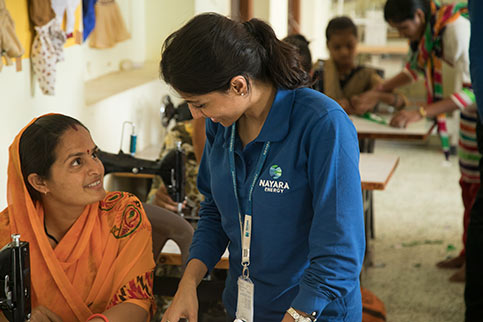
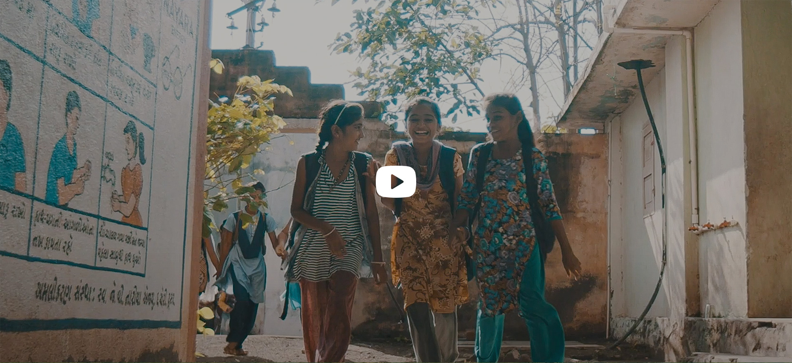
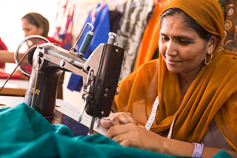
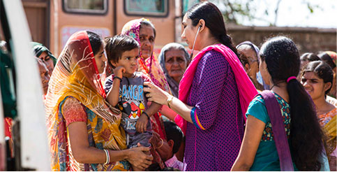

Corporate Social
Responsibility

The Company has constituted a Corporate Social Responsibility Committee named as CSR, Safety and Sustainability Committee (“CSR Committee”). The Board of Directors, on the recommendations of the CSR Committee, has adopted a CSR Policy identifying the activities to be undertaken by the Company. The policy can be accessed on the Company’s website: https://www.nayaraenergy.com/sustainability/csr-policy
The annual report on CSR containing the details of the CSR Policy adopted by the Company and other particulars specified in the Companies (Corporate Social Responsibility Policy) Rules, 2014 is annexed to this Report as Annexure – A. Under the provisions of section 135 of the Act, the Company was not required to spend any amount on CSR activities during FY 2019-20. However, the Board of Directors of the Company had voluntarily decided to undertake CSR activities and approved a CSR budget of `9.94 crore for the FY 2019- 20. The Company spent an amount of `7.82 crore of the approved CSR Budget. Thus, `2.12 crore remained unspent for FY 2019-20. The underspent was due to change in CSR strategy undertaken with the help of an advisory firm. Under the revised strategy, old programs were restructured and new programs were introduced. Further, the launch of projects like Tushti (eradication of malnutrition from Devbhumi Dwarka District) and Smart Agriculture Program was delayed due to delay in structuring the project implementation and review mechanism.


Strengthening Social
Responsibility Commitments
Nayara Energy demonstrates deeper commitment and strategic integration of social responsibilities as part of its corporate structure. The Company incessantly work towards sustaining its CSR legacy of inclusive development and being a responsible “neighbor of choice” for the communities around our refinery and depot.
The social initiatives nurtured and in line with the Company’s CSR policy, span across areas of Sustainable Livelihoods & Environmental Sustainability, Education & Skill Development and Health & Sanitation. Below is the articulation of positive and lasting social impact programs -
Sustainable Livelihoods and
Enviornmental Sustainablity Programme
Creating sustainable livelihood is a commitment that demands compassion
Nayara Energy has been implementing programmes to enrich the environment, create sustainable livelihoods and empower local communities to improve the social infrastructure of the communities. The Company has been putting in place long-term drivers for inclusive growth by enabling on and off-farm livelihood sources by extending knowledge of sustainable agricultural, animal husbandry and water sustenance practices to the communities.
MCM
improvement
water use
farmers
SHGs
this programme
Education and Skill Development
Nayara Energy’s deep engagement with its communities has helped in forging stronger relationship and provided opportunities to enhance gainful livelihood. By enhancing employability of youth to promoting education, entrepreneurship and livelihood enhancement programmes, the Company believes education can help build a brighter future of the nation.

mid-day
meals
Health and Sanitation
Healthy living environment, hygiene and sanitation make a meaningful contribution to improving the quality of life of people in the communities. Nayara Energy’s initiatives aim to curb undernutrition, availability of clean drinking water for communities, preventive healthcare services and drives behavioral change management programmes around hygiene awareness.
